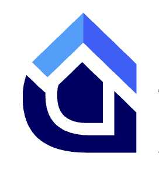

About me
I specialize in digitizing complex, traditional industries. As a core member of Sary (2018–2025), I architected the design system for MENA's fastest-growing B2B marketplace, streamlining the supply chain for thousands of businesses.
Today I bring that rigor to PropTech at Aamar and AI products at Thiqal, and I take my work from design to shipped code with Claude Design and Claude Code.
When I am not reimagining user experiences, I am a photographer, using my lens to find new perspectives on the world.
Work experience
Senior Product Designer | 2026 – Present
- Led end-to-end design for a large-scale platform — storefront web, admin dashboard and mobile app — on one scalable design system.
- Took designs from Claude Design straight into working code with Claude Code, shortening the path from concept to build.
- Designing an AI agent that helps Muslims navigate fatwa requests, built around accuracy and eliminating hallucinated answers.
- Produced landing pages and pitch materials for Thiqal initiatives (Wathiq, Rajeh), plus client branding.

Senior Product Designer | 2023 – Present
- Spearheaded the 0-to-1 product design for the entire PropTech ecosystem, building the Tenant App, Owner App, and Website from the ground up.
- Optimized the post-launch experience, specifically refining the critical "Add Unit" flow to streamline property listing for owners.
- Established a unified design system across the Tenant and Owner apps, significantly reducing design-to-development handover time, and built a UX audit framework and yearly design roadmap.
- Partnered with product managers and engineers across iOS, Android, and Web, and led weekly design reviews and coaching to upskill the team.
Lead Product Designer | 2023 – 2025
- Design System 2.0 & Operations: Led the migration to Design System 2.0, introducing design tokens to bridge the gap between design and development.
- Rebranding: Executed a comprehensive brand overhaul and directed the redesign of the main marketing website.
- Team Leadership: Scaled the department by hiring and onboarding 3 Product Designers. Established hiring standards by conducting 20+ interviews.
Senior Product Designer | 2020 – 2023
- Design System 1.0: Built the company's first centralized Design System from scratch, moving the team from ad-hoc design to structure.
- Advanced UX Research: Conducted rigorous competitive analysis of 21+ global and local competitors, and built personas and user-interview rounds to validate feature sets.
- Key Area Ownership: Took full ownership of the Checkout experience, optimizing the flow to reduce friction and improve conversion metrics.
Product Designer | 2018 – 2020
- Zero-to-One Architecture: Joined as the first employee and delivered the end-to-end design for the Customer App, Driver App, and Admin Dashboard to launch the MVP, working directly with founders and engineers.
Designed & built
- Diet and training app for lifters, designed in Claude Design and built solo in Flutter with Claude Code (190+ commits); in beta on TestFlight and Google Play in English, Arabic and Spanish.
- Meal logging by text, voice, barcode or photo (Claude API), live workout tracking, adaptive weekly check-ins, streaks and an AI coach.
- Supabase backend, Firebase, trilingual landing page, admin Control Center and GitHub Actions release pipeline.
A CapCut-style video editor for iOS, Android, Mac, Windows and web, built with Claude Code. Designed the brand identity, product UI and trilingual waitlist.
A social media post scheduler web app — product design and build with Claude Design and Claude Code.
English/Spanish vocabulary learning with an Arabic RTL interface, game mechanics and an original owl mascot, Kami.
Bilingual AR/EN homepage, product detail pages across six catalog types and an operations admin panel with OTP auth, as interactive token-based HTML prototypes.
Community marketplace for Quranic software resources, with a full Arabic-first bilingual redesign.